Este proyecto presenta el sitio web de Fogón Criollo, un restaurante ficticio de cocina colombiana tradicional ubicado en el Valle del Cauca. Elegimos un restaurante porque su página reúne casi todos los componentes de una interfaz real: un menú de platos con imágenes y precios, un formulario de reservas, una galería, preguntas frecuentes y datos de contacto.
Construimos la página con HTML5 semántico, CSS3 y JavaScript sin librerías externas. Partimos del diseño para teléfono (Mobile First) y ampliamos la distribución con Media Queries hasta llegar al computador de escritorio. Flexbox organiza los elementos en una sola dirección, como el encabezado o los botones. CSS Grid organiza las cuadrículas de dos dimensiones, como las tarjetas del menú y la galería.
Probamos la interfaz en tres anchos de pantalla: 1366 px (computador), 768 px (tableta) y 390 px (teléfono). Durante esas pruebas encontramos un error de visualización en tableta y lo corregimos. La sección 9 lo describe.
2. Objetivo de la interfaz
Objetivo general
Ofrecer a los clientes de Fogón Criollo una página donde consulten la carta, conozcan el restaurante y reserven una mesa desde cualquier dispositivo, sin desplazamientos horizontales ni elementos cortados.
Objetivos específicos
Organizar el contenido con etiquetas semánticas de HTML5 para que el navegador, los lectores de pantalla y los buscadores entiendan cada sección.
Definir una identidad visual coherente con una paleta de colores, dos tipografías y botones con el mismo estilo en toda la página.
Adaptar la distribución a teléfono, tableta y computador con Media Queries, Flexbox y CSS Grid.
Incluir interacción útil: menú adaptable, filtro de platos, tarjetas desplegables, formulario con validación y preguntas frecuentes desplegables.
3. Organización del proyecto
El repositorio sigue la estructura que pide la guía. Cada tipo de archivo vive en su carpeta.
guia-4-desarrollo-de-una-web-responsiva/
├── index.html Estructura principal de la página
├── css/
│ └── styles.css Hoja de estilos (Mobile First + Media Queries)
├── js/
│ └── main.js Interacciones de la página
├── img/ Ilustraciones SVG originales (logo, platos, salón)
├── docs/
│ ├── Documentacion.pdf Este documento
│ ├── video-validacion.mp4
│ └── capturas/ Evidencias en computador, tableta y móvil
└── README.md
Las imágenes son ilustraciones vectoriales en formato SVG que creamos para el proyecto. El formato SVG pesa poco y se ve nítido en cualquier resolución, algo útil en pantallas de teléfono con alta densidad de píxeles.
4. Estructura HTML5
La página usa una sola estructura para todos los dispositivos. CSS cambia la distribución, pero el orden del contenido en el HTML se mantiene igual. La tabla resume las etiquetas semánticas y la función de cada una.
Etiqueta
Uso en la página
<header>
Encabezado fijo con el logo, el botón del menú hamburguesa y la navegación.
<nav>
Menú principal con enlaces a cada sección. El pie de página tiene un segundo <nav> con enlaces rápidos.
<main>
Contenedor del contenido principal. Hay uno solo por página.
<section>
Siete secciones con id: inicio, nosotros, menú, galería, reservas, preguntas frecuentes y contacto. Los id permiten navegar con anclas (#menu, #reservas).
<article>
Cada plato del menú y cada tarjeta de contacto. Son piezas con sentido propio.
<figure> y <figcaption>
Imágenes de la portada, la sección Nosotros y la galería, con su leyenda.
<form>, <label>, <input>, <select>, <textarea>
Formulario de reservas. Cada campo tiene su <label> asociado con for e id.
<details> y <summary>
Preguntas frecuentes desplegables. Funcionan sin JavaScript.
<footer>
Pie de página con logo, enlaces y derechos.
Etiquetas de configuración
La etiqueta <meta name="viewport"> le indica al teléfono que use el ancho real de la pantalla. Sin ella, el navegador móvil simula una pantalla de 980 px y las Media Queries no se activan.
Todas las imágenes tienen texto alternativo (alt). El logo, que solo decora, lleva alt="".
El botón hamburguesa informa su estado con aria-expanded y cambia su etiqueta entre "Abrir menú" y "Cerrar menú".
Los botones del filtro usan aria-pressed para indicar cuál está activo.
Los mensajes de error del formulario usan aria-live para que el lector de pantalla los anuncie.
5. Estilos CSS3
Variables y paleta de colores
Definimos los colores, las fuentes y las medidas como variables en :root. Si cambiamos el color principal en una línea, cambia en toda la página. La paleta toma los tonos de una cocina de leña: barro, maíz, hoja de plátano y madera.
Terracota #C2410C
Mostaza #E0A526
Verde hoja #2F4F3A
Café oscuro #2B1D14
Crema #FFF8EE
:root {
--c-primary: #c2410c; /* terracota: botones y enlaces */
--c-accent: #e0a526; /* mostaza: detalles y foco */
--c-green: #2f4f3a; /* fondo de la sección de reservas */
--ff-title: "Playfair Display", Georgia, serif;
--ff-body: "Poppins", "Segoe UI", Arial, sans-serif;
--radius: 14px;
}
Tipografía
Usamos dos fuentes de Google Fonts. Playfair Display, una serif elegante, va en los títulos. Poppins, una sans serif fácil de leer en pantallas pequeñas, va en el texto. Cada fuente tiene una fuente de respaldo del sistema por si Google Fonts no carga.
Componentes y efectos
Propiedad CSS3
Dónde la usamos
border-radius
Botones redondeados, tarjetas, campos del formulario e imágenes.
box-shadow
Profundidad en tarjetas y formulario. La sombra crece cuando el cursor pasa sobre una tarjeta.
transition y transform
Los botones y tarjetas suben unos píxeles al pasar el cursor. Las imágenes de la galería hacen zoom.
@keyframes
Animación fadeIn que aparece cuando el filtro muestra una tarjeta.
linear-gradient y radial-gradient
Fondo de la portada y degradado oscuro bajo las leyendas de la galería.
backdrop-filter
Desenfoque del encabezado fijo cuando el contenido pasa por debajo.
aspect-ratio y object-fit
Las fotos de las tarjetas mantienen proporción 4:3 sin deformarse.
position: sticky
El encabezado queda visible durante el desplazamiento.
prefers-reduced-motion
Quita las animaciones a quien configuró su sistema para ver menos movimiento.
6. Estrategia de diseño responsivo
Mobile First
Escribimos primero los estilos para teléfono, sin ninguna Media Query. Después agregamos tres Media Queries con min-width, de menor a mayor. Cada una suma cambios sobre la anterior. Así el teléfono descarga y aplica la versión más simple, y las pantallas grandes reciben solo lo que necesitan de más.
Punto de corte
Dispositivo
Cambios principales
Base (sin Media Query)
Teléfono
Una columna. Menú hamburguesa. Botones a todo el ancho. Filtros con desplazamiento lateral dentro de su caja.
min-width: 600px
Tableta pequeña
Menú de platos en 2 columnas. Galería en 3 columnas. Campos del formulario lado a lado. Contacto en 2 columnas.
min-width: 900px
Tableta grande y portátil
Desaparece el menú hamburguesa y la navegación pasa a una fila. La portada pone texto e imagen lado a lado. Menú en 3 columnas. Galería en mosaico de 4 columnas.
min-width: 1200px
Escritorio
Menú de platos en 4 columnas. Títulos más grandes y filas de galería más altas.
Todas las imágenes tienen max-width: 100% y height: auto. Nunca superan el ancho de su contenedor.
El contenedor principal usa width: 100%, un max-width de 1180 px y márgenes laterales de 16 px en teléfono.
Usamos unidades relativas (rem, %, fr) en lugar de anchos fijos en píxeles.
Los textos largos, como el correo electrónico, tienen overflow-wrap: anywhere como respaldo.
Medimos con JavaScript el ancho del documento (scrollWidth) contra el ancho visible en teléfono y tableta. Los dos valores coinciden: 375 = 375 y 753 = 753.
Adaptación de botones, textos y formularios
Los botones y campos miden al menos 44 a 46 px de alto, el tamaño mínimo recomendado para tocar con el dedo. Los campos del formulario usan letra de 16 px; con un tamaño menor, Safari en iPhone hace zoom al tocar el campo. Los títulos crecen en cada punto de corte: 2,1 rem en teléfono, 2,6 rem en tableta y 3,6 rem en escritorio.
7. Elementos de interacción
El archivo js/main.js contiene toda la interacción. No usa librerías.
Elemento
Funcionamiento
Menú adaptable (hamburguesa)
En pantallas menores de 900 px, el botón de tres líneas abre y cierra el menú. Las líneas se transforman en una X. El menú se cierra al elegir una opción, al presionar Escape o al ampliar la ventana a escritorio.
Filtro del menú
Cinco botones (Todos, Entradas, Platos fuertes, Bebidas, Postres) muestran solo los platos de la categoría elegida. Cada tarjeta guarda su categoría en el atributo data-category.
Tarjetas interactivas
El enlace "Ver detalles" despliega información extra del plato y cambia a "Ocultar detalles". Al pasar el cursor, la tarjeta sube y su sombra crece.
Formulario de reservas
Valida nombre, correo, fecha, hora y número de personas. Muestra un mensaje de error bajo cada campo incorrecto y pone el cursor en el primero. La fecha mínima es el día actual. Con los datos correctos, muestra un mensaje de confirmación con el resumen de la reserva.
Preguntas frecuentes
Cuatro preguntas con <details>. El símbolo + gira y forma una X al abrir.
Navegación activa
Al desplazarse, el enlace de la sección visible queda resaltado y el encabezado gana una sombra.
Botón "volver arriba"
Aparece después de bajar 500 px y regresa al inicio con desplazamiento suave.
Probamos estas funciones con un script en la consola del navegador. El filtro "Bebidas" dejó visibles solo Lulada y Limonada de coco. El formulario vacío mostró cuatro mensajes de error, y con datos válidos mostró la confirmación de la reserva.
8. Evidencias de funcionamiento
Tomamos las capturas con Google Chrome en tres anchos de pantalla. La carpeta docs/capturas del repositorio guarda también la página completa en cada tamaño.
8.1 Computador (1366 × 768 px)
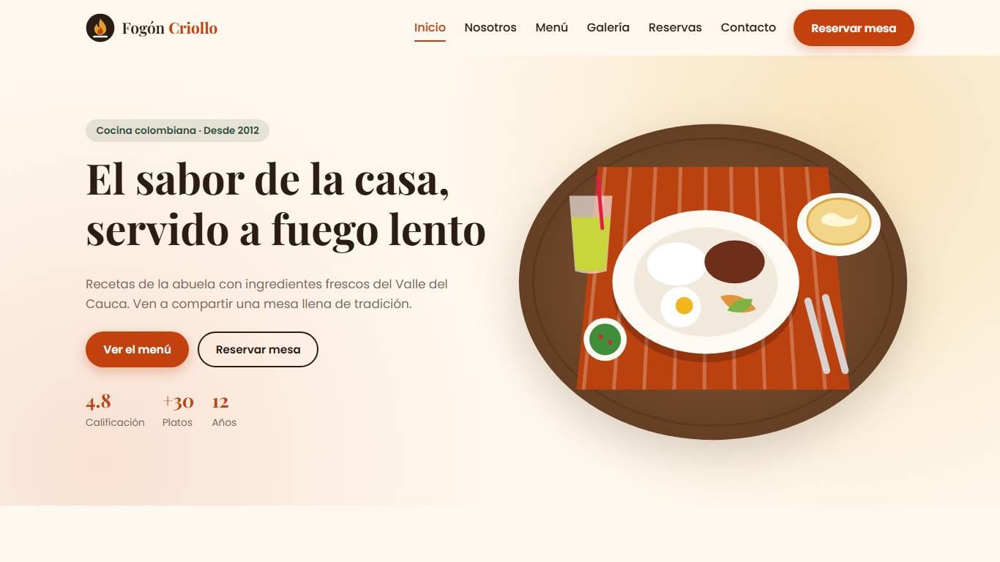
Figura 1. Portada en computador: navegación en una fila, texto e imagen lado a lado (Flexbox).
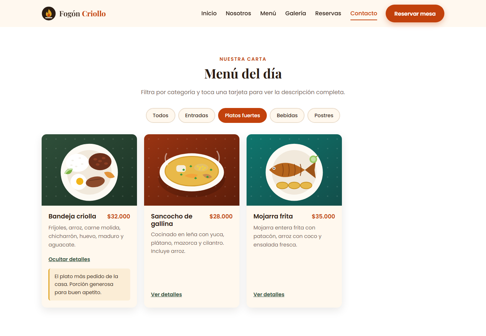
Figura 2. Menú filtrado por "Platos fuertes" con un detalle desplegado. Las tarjetas usan CSS Grid.
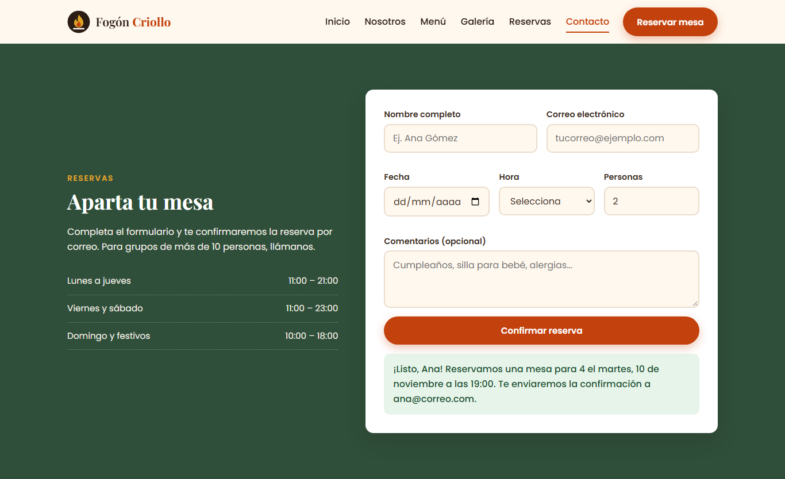
Figura 3. Reserva en computador: información y formulario en dos columnas, con el mensaje de confirmación.
8.2 Tableta (768 × 1024 px)
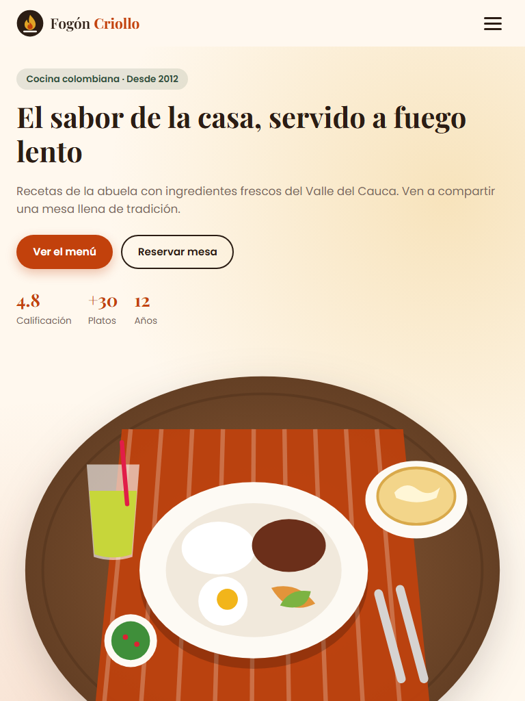
Figura 4. Portada en tableta. Aparece el menú hamburguesa.
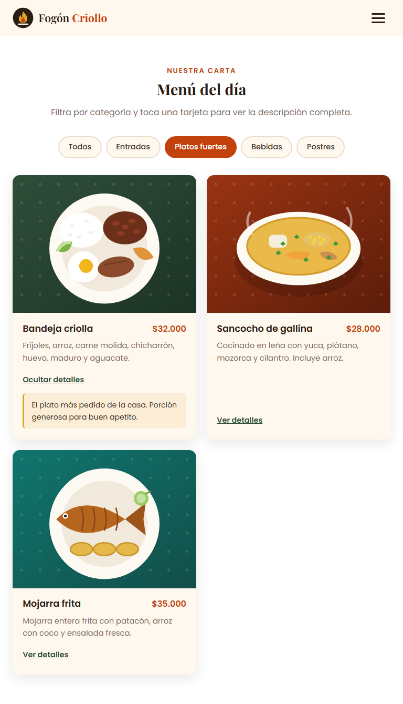
Figura 5. Menú en 2 columnas con filtro activo.
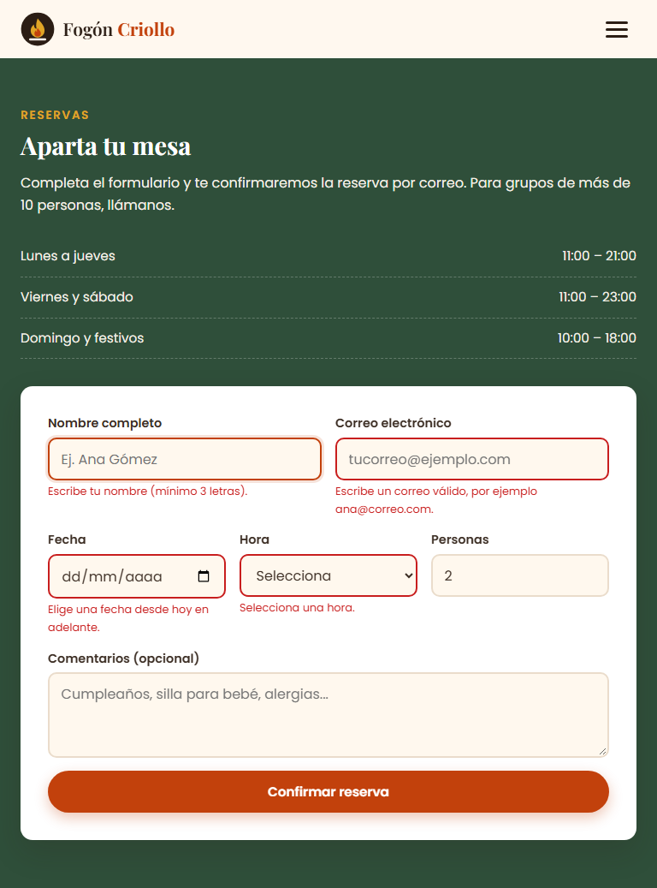
Figura 6. Formulario en tableta: fecha, hora y personas en una fila de 3 columnas, con mensajes de validación.
8.3 Teléfono móvil (390 × 844 px)
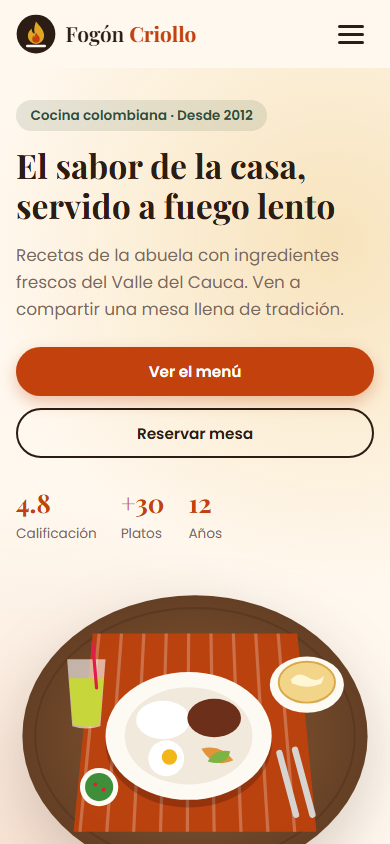
Figura 7. Portada en una columna.
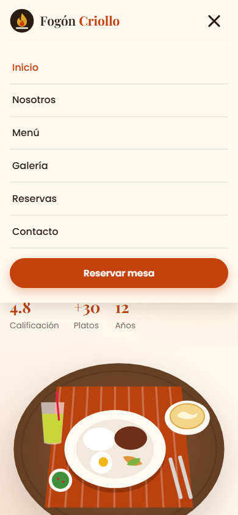
Figura 8. Menú hamburguesa abierto.
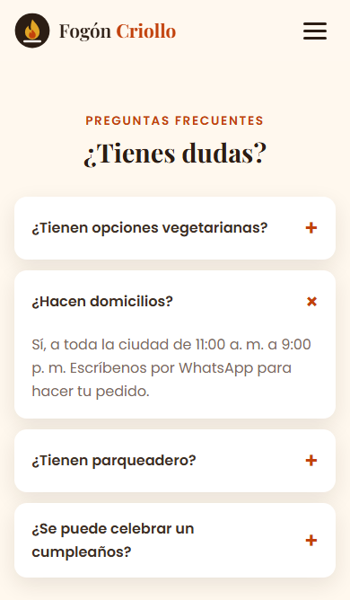
Figura 9. Pregunta frecuente desplegada.
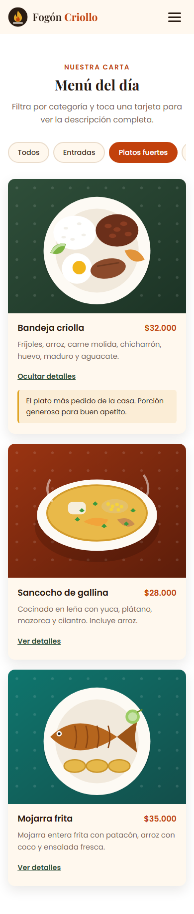
Figura 10. Menú filtrado en una columna. Los filtros se deslizan dentro de su caja.
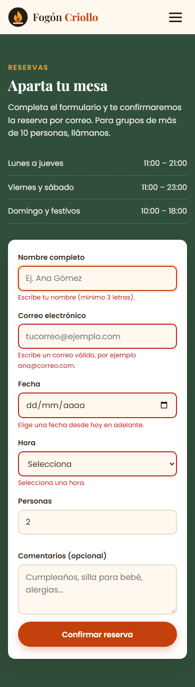
Figura 11. Formulario apilado en una columna con mensajes de error.
9. Problemas encontrados y correcciones
Revisamos cada tamaño buscando desbordes, textos cortados y elementos fuera de lugar.
Problema
Dispositivo
Corrección
El correo "reservas@fogoncriollo.co" se partía en dos líneas dentro de su tarjeta de contacto.
Tableta (768 px)
Con tres columnas, cada tarjeta medía unos 200 px y el correo no cabía. Cambiamos la cuadrícula de contacto a 2 columnas en tableta, con la tarjeta del correo a todo el ancho. Las 3 columnas empiezan ahora en 900 px.
Los cinco botones de filtro no caben en una fila de 375 px.
Teléfono
Dejamos los filtros en una fila con overflow-x: auto dentro de su propia caja. Solo esa fila se desliza de lado y la página conserva su ancho.
Si alguien abre el menú en tableta y luego agranda la ventana, el menú puede quedar abierto.
Tableta a escritorio
Con matchMedia("(min-width: 900px)"), el script cierra el menú y reinicia el botón al pasar a escritorio.
Tras las correcciones medimos de nuevo el ancho del documento en teléfono y tableta. No hay desplazamiento horizontal en ninguno de los dos.
10. Video de validación
El archivo docs/video-validacion.mp4 del repositorio muestra la página en los tres tamaños de pantalla. El video recorre la página completa en computador, tableta y teléfono, y presenta el menú hamburguesa, el filtro y el formulario en funcionamiento.
Para validar la página en tu propio equipo, abre index.html en Chrome, presiona F12 y activa la barra de dispositivos (Ctrl + Shift + M). Ahí puedes elegir el ancho de un teléfono o una tableta.
11. Conclusiones
Empezar por el teléfono simplificó el trabajo. Los estilos base resolvieron la versión más difícil, una sola columna estrecha, y cada Media Query agregó pocas líneas.
Flexbox y Grid se complementan. Flexbox sirvió para alinear elementos en fila o columna, como el encabezado y los botones. Grid resolvió las cuadrículas del menú y la galería con una línea por punto de corte.
Las pruebas en tamaños reales encontraron un error que el diseño en escritorio no mostraba: el correo partido en tableta. Conviene probar en los tres tamaños mientras se desarrolla cada sección.
Las etiquetas semánticas y los atributos ARIA cuestan poco y hacen la página usable con lector de pantalla y teclado.
Las imágenes SVG mantienen la nitidez en cualquier pantalla y pesan menos que fotografías equivalentes, lo que acelera la carga en datos móviles.
12. Referencias
Fraile, A. (2015). ¿Qué es un diseño responsive? [Video]. YouTube.
MDN Web Docs. (s. f.). Uso de media queries. Mozilla. https://developer.mozilla.org/es/docs/Web/CSS/CSS_media_queries/Using_media_queries
MDN Web Docs. (s. f.). Conceptos básicos de flexbox. Mozilla. https://developer.mozilla.org/es/docs/Web/CSS/CSS_flexible_box_layout/Basic_concepts_of_flexbox
MDN Web Docs. (s. f.). Conceptos básicos del posicionamiento con Grid. Mozilla. https://developer.mozilla.org/es/docs/Web/CSS/CSS_grid_layout/Basic_concepts_of_grid_layout
Sharma, S. K. (2023). Web designing using HTML, DHTML and JavaScript. Laxmi Publications. Base de datos eBook Academic Collection.
W3C. (2023). Web Content Accessibility Guidelines (WCAG) 2.2. https://www.w3.org/TR/WCAG22/
 Fogón Criollo
Fogón Criollo